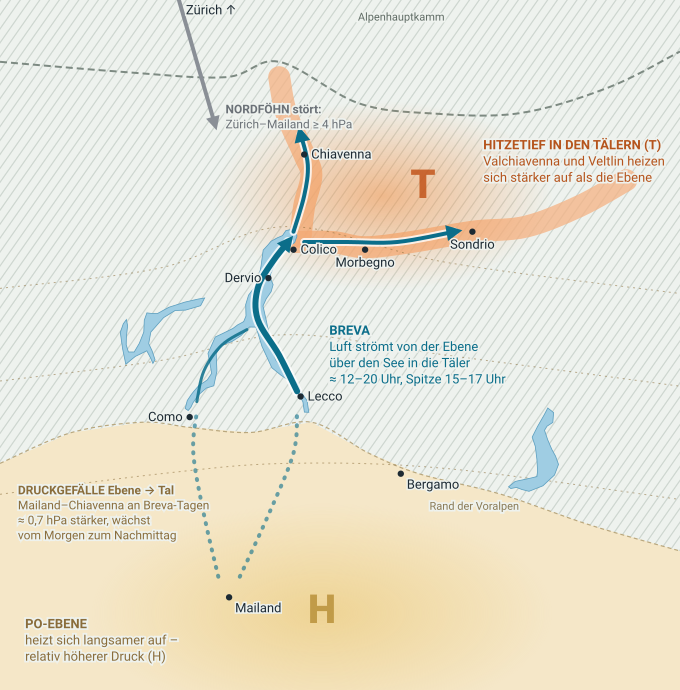

The Breva
The Breva is the afternoon wind of Lake Como. It blows from the south up the lake on sunny days, from about midday until the evening, and is strongest on the upper lake between Dervio and Colico. In the morning a weaker wind blows the other way, from the north: the Tivano.
How it forms: The sun heats the Alpine valleys north of the lake – Valchiavenna and Valtellina – more strongly than the Po plain. A shallow heat low forms over the valleys during the day and air from the plain flows in. The lake is the channel: between steep slopes the flow is bundled and at the northern end split into the two valleys – north towards Chiavenna, east towards Sondrio. In the evening the valleys cool, the pressure difference disappears and the wind dies.
What disrupts it: North foehn and strong northerly situations (the flow over the Alps is stronger than the thermal pull), thunderstorms over the mountains (cold outflow from the north), clouds and humid air (less heating) – and heat waves in the Po plain, which shrink the difference to the valleys.
Update 25 Nov 2026: The model now predicts the Breva as the stations measure it – without excluding rain days taken from the weather model. Against the satellite it is clearly better this way. Also checked for leakage, tuning and model size: model check.
How it forms – map and weather situation

The engine: Valchiavenna and Valtellina are narrow and surrounded by mountains. The sun heats little air over a lot of slope, while the plain warms more slowly. Pressure drops over the valleys (L), the Po plain stays relatively higher (H). The air evens this out by the shortest route: over both arms of the lake, up the upper lake and at its northern end into the valleys.
The funnel: On the upper lake steep slopes bundle the flow; in the northern basin it splits towards Chiavenna and Sondrio. That is why it is strongest between Dervio and Colico.
The daily cycle: At Samolaco the south wind starts around 11–12:00, peaks at 15–17:00 and dies around 20–21:00 when the valleys cool. In the morning the Tivano blows weakly back from the north.
The weather situation on Breva days – in our data
Typical values on fair-weather days with Breva (≥ 14 kn) and without, from the 2014–2026 weather data (ERA5), compared within the same months. In brackets: evenings on which the satellite measured the wind on the lake.
| Ingredient | with Breva | without | what it means |
|---|---|---|---|
| Pressure gradient Milan → Chiavenna, 15:00 | −1.6 hPa | −2.3 hPa | 0.7 hPa more gradient towards the valley (satellite: 1.6 hPa) – the driver. Absolute values are shifted by the reduction to sea level; the difference is what counts. |
| Build-up of the gradient, 6 → 15:00 | +0.6 hPa | +0.4 hPa | The heat low in the valley forms during the day (satellite: +0.7 vs +0.2 hPa). |
| Pressure gradient Bergamo → Sondrio, 15:00 | −0.8 hPa | −1.5 hPa | The same into Valtellina. |
| Sun in the valley (Chiavenna, 9–17:00) | 5.3 kWh/m² | 4.7 kWh/m² | More sun, more heating. |
| Clouds over Chiavenna | (42 %) | (62 %) | Cloud cover slows the heating. |
| Dry air in Milan (dew-point spread) | 13.1 K | 10.8 K | Dry air heats faster, less haze and fewer cumulus clouds. |
| Daily maximum, Sondrio | 25.0 °C | 27.1 °C | Not the hottest days: in great heat the plain itself is heated and the difference is smaller. |
| Today warmer than the last 30 days | +6.6 K | +4.5 K | Warm air over a still cool lake and ground – typical of spring and early summer. |
| Pressure difference Zurich → Milan, 12:00 | 0.3 hPa | 0.65 hPa | Calm situation over the Alps. From about 4 hPa north foehn pushes through – then no Breva. |
| Rain on the lake | (0 mm) | (1 mm) | A short shower hardly matters, rainy weather does. |
In short: Breva weather
- High pressure, weak wind over the Alps – no northerly or foehn situation, no front. On the large scale rather a light southerly than a northerly flow.
- Sun from the morning, dry air – the clearer the morning, the earlier and stronger.
- Spring and early summer – April to June have the most Breva days (8–10 a month), July fewer, from September rare: the valleys no longer heat up enough compared with the plain.
- It often comes several days in a row: after a Breva day another follows in 36 % of cases, otherwise only in 9 % – the weather situation usually persists.
- Long into the evening when the gradient towards the valley is strong and the north–south situation over the Alps is very calm (Zurich−Milan 1.8 instead of 3.9 hPa on days when it dies early).
- Disruptors: north foehn (6–10 days a month, all year), rain and thunderstorms (most frequent May to August), thick cloud, heat waves.
Where it is strongest
Wind on the water can be measured with radar images from the Sentinel-1 satellite: wind roughens the water surface and the radar sees the roughness (100 m resolution). Averaged over the evenings with Breva, this gives the typical picture.
The images are taken around 19:15 – in the late phase of the Breva. So the picture shows where the Breva lasts longest in the evening: in the northern basin at Colico, Sorico and Gera, where the flow is funnelled into the valleys. Local reports also name the narrows between Dervio and Cremia as the place with the strongest gusts at midday – the Breva starts there first and probably also fades there first.

When: daily cycle and season
Daily cycle on Breva days
Solid line: Breva days, dashed: other days. The stations stand in the valley or on slopes and measure only part of the lake wind (factor see stations).
Season
What makes a Breva day
Each weather variable was tested on its own against the Breva days – on fair-weather days, within the same month (so that it is not just the season speaking) and year by year. Source: ERA5 weather data 2014–2026, the weather as it was.
Separation: 0 = useless, 1 = separates Breva days perfectly. Stable: share of years with the same relationship. Satellite: relationship with the lake wind in the evening image (deviation from the seasonal cycle).
How predictable it is
The Breva model learns from the weather variables and was tested on the real ECMWF forecasts 2024–2026, year by year out-of-fold – exactly the way the app uses it.
AUC: probability that a Breva day is rated higher than a day without Breva (1 = perfect, 0.5 = chance). Up to day 4 the Breva is well predictable; after that the chance mainly reflects the general situation.
How reliable the model is
A model that looks good on its own data need not hit the wind on the lake. So it was tested against an independent truth – the wind in the satellite image (Sentinel-1, around 19:15) – and deliberately searched for shortcuts through which it might “see” the answer instead of predicting it.
What exactly is predicted
Previously a day only counted as a Breva day if it was not also classed as a rain or foehn day – and that classification partly came from the ERA5 weather model. The model could therefore read part of its target straight from the rain forecast: it looked very good on paper (AUC 0.93) but scored only 0.72 against the satellite. Many of those “rain days” had good wind on the lake.
Now the measurements alone define the target: Samolaco calm in the morning, no north wind, and on the lake in the afternoon at least 2 hours in a row above the threshold. That is the question “can I kite?”.
| Target | AUC tomorrow | AUC in 5 days | vs satellite | 90 % range satellite |
|---|---|---|---|---|
| before: without rain/foehn days (ERA5) | 0.93 | 0.85 | 0.72 | 0.59–0.83 |
| now: from stations only | 0.88 | 0.82 | 0.81 | 0.69–0.89 |
≥ 14 kn, tested 2024–2026 with real ECMWF runs. Only 126 evenings with 19 Breva cases are available against the satellite, hence the wide ranges; but the improvement shows up in all variants. The lower AUC on its own target is more honest: the convenient shortcut via the rain forecast is gone.
Simplified: Breva day and long Breva (November 2026)
The targets are now simpler and closer to the satellite. A Breva day is a day on which Samolaco or Colico – each scaled to the lake with its own satellite factor (× 1.37 and × 2.5) and only with wind from the Breva direction – shows at least 2 hours in a row of 14+ kn. In the morning only wind from another direction counts against it. Of all target variants this one agrees best with the satellite. The 18 kn target is gone: neither the satellite nor the weather models could tell a strong from a normal Breva.
Instead the today model now asks for a long Breva (at least 5 hours with 14+ kn). The stations show that short Breva days are real, not false alarms: a third of all Breva days last only 2–3 hours and mostly end by 16–17:00. The satellite confirms it – when the stations say the Breva ended early, the lake is already calmer at 19:15.
| Model (tested 2024–2026) | AUC (March–October) | Breva call catches |
|---|---|---|
| 7 days, Breva day, tomorrow | 0.84 | 54 % of Breva days |
| 7 days, Breva day, in 3 days | 0.82 | 51 % |
| 7 days, Breva day, in 4 days | 0.78 | 36 % |
| 7 days, Breva day, in 5–7 days | 0.72–0.76 | 23 % |
| today 9:00, Breva day | 0.86 | 65 % |
| today 13:00, Breva day | 0.92 | 68 % |
| today 13:00, long Breva | 0.91 | 65 % of long Breva days |
| today 15:00, long Breva | 0.95 | 72 % |
Breva call: shown from a chance of at least 50 %, at the lowest level at which at least 7 of 10 calls were right in the test. A day without a call is not a “no” – the percentage is the actual forecast.
Until about 9:00 the today model rests mainly on the forecast (sun in the valley, south wind over the lake); from 11:00 Vercana turns south-west first, from 13:00 the measured wind on the lake decides. Whether a Breva will last long is hard to tell in the morning and becomes clear in the early afternoon.
Leakage: does the model predict or copy?
- Weather of the previous day instead of the day itself: in season the skill drops from 0.90 to 0.76, with the season alone to 0.65. So the model really reads the weather of the day, not just “summer” or “yesterday too”.
- Random vs year-wise split: both 0.951 – neighbouring days do not give each other away.
- Weather-model analysis vs real forecast: no variable separates only in the analysis (ERA5) and fails in the forecast; the largest gap is 0.06.
- Today model: Samolaco helps define the target, but its midday values are hardly too good – 0.79 against the satellite, 0.81 against the target. Vercana and Colico, which are not part of the target, score the same.
- Dropping the rain variables changes nothing (0.930 vs 0.928) – they are weather, not copying.
Tuning, shrinking, adding knowledge
- Tuning (deeper or shallower trees, more trees, smaller learning rate): all variants within ±0.005. The model is neither over- nor underfitted.
- Smaller works: 15 instead of 37 weather variables lose only 0.004–0.008 in season and match the satellite equally well. The most important: north-foehn index, south wind over the lake, rain on the lake and in the valley, season, sun in the valley, wind in the plain, temperature and pressure gradient from plain to valley, dry air. Below 10 variables it gets noticeably worse. The app keeps all 37 – it costs only milliseconds in the browser.
- Local knowledge as fixed directions of effect (“more sun in the valley, more gradient → never less Breva”): helps the old target at 3–5 days lead, not the new one. Monthly climate as prior knowledge, de-seasonalised temperatures or physically combined variables add nothing – the model finds these relations itself.
- Water temperature (satellite, Copernicus): hardly any effect of its own once season and air values are known (AUC of the anomaly 0.61). Left out for now.
Measuring stations
The ARPA stations on the upper lake are sheltered or away from the water. Only the comparison with the satellite shows how much wind reaches the lake.
Factor: lake wind / station at the overpass hour on Breva evenings. Skill: how well the station recognises evenings with ≥ 12 kn on the lake. Samolaco is the station with the clearest Breva daily cycle; its afternoon maximum times corresponds to the wind on the upper lake.
Method and limits
- Whole year, the season is a model input (in winter there is only the odd Breva). Breva day (what the model predicts): Samolaco or Colico, scaled to the lake with the satellite factor and only with wind from the Breva direction, at least 2 h in a row from 14 kn (11–20:00); no wind from another direction in the morning (< 6 kn), no north wind. Long Breva: at least 5 hours from 14 kn. Defined by the measurements alone – a short shower does not invalidate a Breva day.
- South wind with rain: some Breva days are wet. Mostly this is south wind ahead of a front, not a thermal Breva – but according to the satellite it blows similarly strong on the lake. The app then shows a rain note.
- Leakage check: previous-day variables, random vs year-wise split, ERA5 vs forecast and measurements vs satellite – no sign that the model “sees” the answer instead of predicting it.
- Satellite: Sentinel-1 (since 2014), one image every few days, always around 7:30 and 19:15. Used to scale the stations and to check the target. Wind speeds from the radar (CMOD5.N) are made for the sea and only a rough guide on a lake; for yes/no the water roughness compared with a calm image of the same overpass works as well.
- Weather variables: ERA5 (training) and ECMWF forecasts (app) at 11 points from Lyon to Venice.
- Limits: no station measures directly on the water at Dervio, Cremia or Domaso – the daily course on the lake is estimated. Private stations (Domaso, Gravedona, Cremia) would improve this.